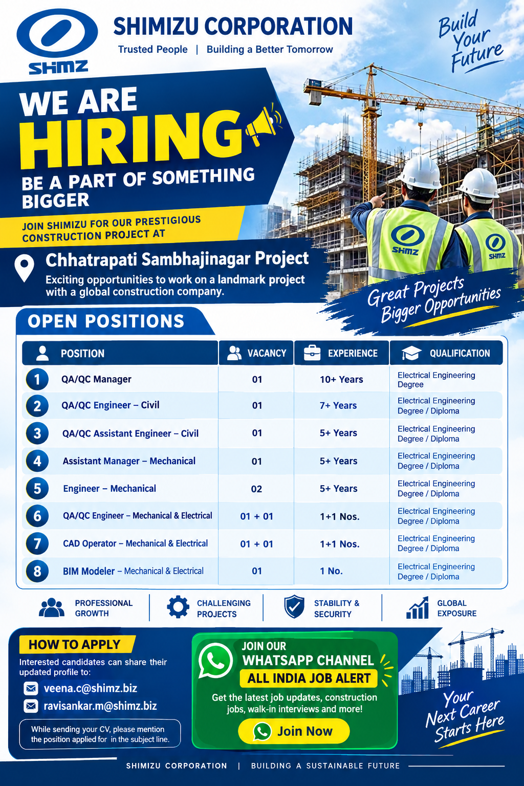

Shimizu Corporation has announced exciting career opportunities for experienced professionals for its prestigious construction project at Chhatrapati Sambhajinagar. Candidates with relevant experience in civil, mechanical and electrical engineering, quality control, CAD and BIM-related work can explore these vacancies.
This recruitment opportunity is suitable for experienced construction professionals who are looking to work with an established global construction company and gain experience on a major infrastructure project.
Shimizu Corporation is a globally recognized construction company involved in major building, infrastructure and engineering projects. The current recruitment drive is for its construction project located at Chhatrapati Sambhajinagar. The company is inviting applications from suitable and experienced candidates for multiple technical and engineering positions.
The vacancies cover quality assurance and quality control, mechanical engineering, electrical and mechanical coordination, computer-aided design and building information modelling. Candidates should carefully check the position, experience and qualification requirements before applying.
Project Location: Chhatrapati Sambhajinagar, Maharashtra, India.
Candidates who are willing to work at the project location and have suitable experience are encouraged to apply.
| No. | Position | Vacancy |
|---|---|---|
| 1 | QA/QC Manager | 1 No. |
| 2 | QA/QC Engineer – Civil | 1 No. |
| 3 | QA/QC Assistant Engineer – Civil | 1 No. |
| 4 | Assistant Manager – Mechanical | 1 No. |
| 5 | Engineer – Mechanical | 2 Nos. |
| 6 | QA/QC Engineer – Mechanical & Electrical | 1 + 1 Nos. |
| 7 | CAD Operator – Mechanical & Electrical | 1 + 1 Nos. |
| 8 | BIM Modeler – Mechanical & Electrical | 1 No. |
Candidates should possess qualifications and professional experience relevant to the position they are applying for. Engineering, construction, quality control, mechanical, electrical, CAD and BIM professionals should ensure that their educational qualifications and work experience match the requirements of the position.
The recruitment poster indicates opportunities for candidates with experience in different technical areas. Applicants should provide accurate information about their previous projects, responsibilities, technical skills and total years of experience in their updated profile.
Experienced professionals working in construction, engineering, quality assurance, quality control, mechanical services, electrical services, CAD drafting and BIM modelling can consider these openings. Candidates who have worked on large construction or infrastructure projects may find these positions particularly relevant.
Before submitting your CV, check the position carefully and make sure that your resume clearly mentions your current designation, previous project experience, educational qualification, technical skills and contact information.
Interested candidates can share their updated profile or CV with the recruitment team using the email addresses mentioned below.
Email 1:
veena.c@shimz.biz
Email 2:
ravisankar.m@shimz.biz
Candidates should mention the position applied for clearly in their email subject line. It is recommended to send an updated CV containing correct educational, professional and project information.
Candidates should apply only if their qualifications and professional experience are relevant to the position. Do not submit false or misleading information in your resume. Make sure all details provided in your CV are accurate and can be supported by relevant documents if requested during the recruitment process.
Applicants should also carefully verify the recruitment communication before sharing sensitive personal documents. Never pay money to anyone claiming to guarantee selection, an interview or a job offer. Genuine recruitment processes should be checked through the appropriate company communication channels.
Construction projects provide professionals with the opportunity to work with multidisciplinary teams and gain exposure to project execution, quality management, engineering coordination, design, documentation and site operations. Working on a major project can also provide valuable professional experience for candidates planning a long-term career in the construction and infrastructure sector.
The Shimizu openings listed above cover several technical functions, which means candidates from different engineering and construction backgrounds may find a suitable position. Applicants should select only the role that matches their actual experience and qualification.
Get the latest job updates, construction jobs, engineering vacancies, walk-in interviews and other recruitment updates through our All India Job Alert WhatsApp Channel.
JOIN WHATSAPP CHANNELThis page has been created to provide an easy-to-read summary of the recruitment information shown in the job poster. Candidates should carefully review the original recruitment information and confirm the latest application requirements before submitting their profile.
If your experience matches one of the listed positions, prepare your updated CV and send it to the recruitment email addresses mentioned in the How to Apply section. Mention the position applied for clearly so that your application can be reviewed for the appropriate vacancy.
For more employment updates, construction vacancies, engineering jobs and other opportunities across India, candidates can also join our WhatsApp channel using the Join WhatsApp Channel button provided above.